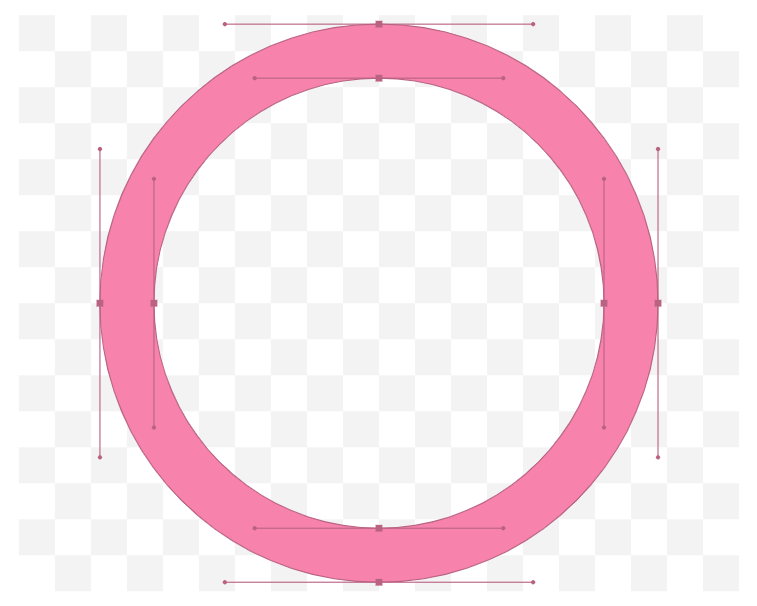

Discover
My Feed

Viral image shows scale of melting ice in Greenland
A photo showing sled dogs wading through water ankle-deep on top of a melting ice sheet in
Greenland
has gone viral. The picture taken by Steffen Olsen from the Centre for Ocean and Ice at the
Danish
Meteorological
Institute shows the scale of melting ice in Greenland. Olsen said the ice sheet beneath the
water
was
1.2 metres
thick.
short by Ankush Verma

The Lighting effect
Lighting is one of the most vital and complicated aspects of photography. Furthermore, it's one
of the most underappreciated. The word "photography" has roots in Greek and literally means
"drawing with light." Yet beginners often pick up a camera and begin shooting without giving
lighting too much though. When it gets dark, they might add on a strobe light. But just like the
manual mode on your DSLR, mastering a few lighting fundamentals can set you apart from many
other aspiring photographers and take your images to the next level.
short by
Sandro Katalina
